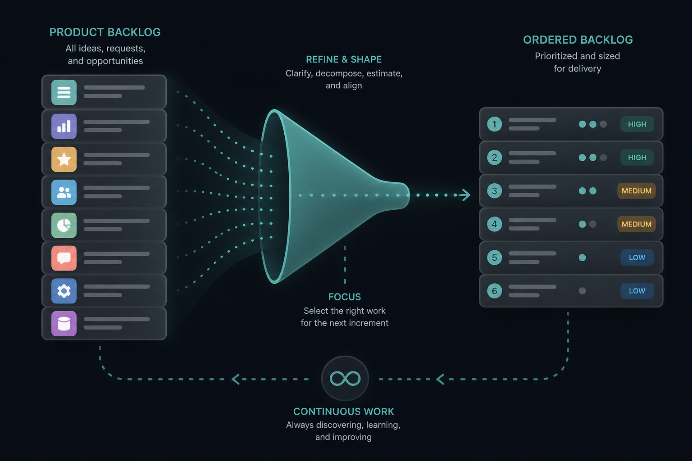

Refinement is continuous work, not a meeting
Source: Scrum.org (@Scrumdotorg)
original post
What it claims
All work that adds order, size, and detail to the Product Backlog is refinement — whether it happens in a meeting or alone. Mary Iqbal (via Scrum.org): the funnel is the practice, not the calendar invite.
Why it matters for a PO
POs often treat refinement as a recurring ceremony. In Scrum it is ongoing Product Backlog work. If the only refinement time is a 60-minute slot, the backlog stays coarse and Sprint Planning becomes discovery.
3 takeaways
- Refinement = ordering + sizing + detail, anytime — not a named event.
- Solo prep counts. Bring a clearer backlog into the room; do not wait for the room to create clarity.
- If Planning still invents estimates and splits stories, refinement is underfunded.
Practice this week
Before the next Planning, pick the top 5 Product Backlog items. Alone, add one order change, one size, and one clearer acceptance note to each. Bring that to the team and time how much Planning still spends on discovery.